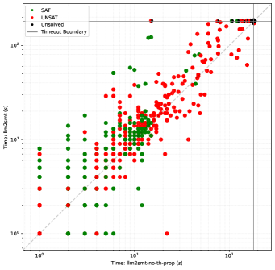

An LLM-built DPLL(T)-style SMT solver for QF_UF emits Lean proofs for unsatisfiable instances, certified with Lean's grind tactic.
Abstract
Whether LLMs can reason or write software is widely debated, but whether they can write software that itself reasons is largely unexplored. We present a case study in which an LLM coding agent builds a complete DPLL(T)-style SMT solver for QF_UF with zero human-written code. The solver implements the Nieuwenhuis-Oliveras congruence closure algorithm, includes preprocessing, and emits Lean proofs for unsatisfiable instances. We describe the development process and key challenges, and show that the resulting solver is competitive on SMT-LIB benchmarks.
Problem
Whether LLMs can build software that itself performs automated reasoning (as opposed to merely writing code or generating proofs) is largely unexplored.
Approach
An LLM coding agent (Claude Code with Sonnet 4.6) builds a complete DPLL(T)-style SMT solver for QF_UF with zero human-written code. The solver implements the Nieuwenhuis-Oliveras congruence closure algorithm, includes preprocessing and theory propagation, and emits Lean proofs for unsatisfiable instances.

Figure 1 : Comparison with and without theory propagation.
Results
The solver (llm2smt) solves 7,468 of 7,500 QF_UF benchmarks from SMT-LIB, competitive with z3 (7,500) and cvc5 (7,494). It certifies 285 unsatisfiable instances with Lean proofs. No human-written code was involved.